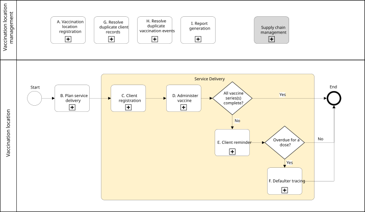
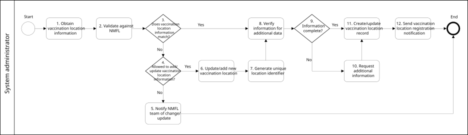
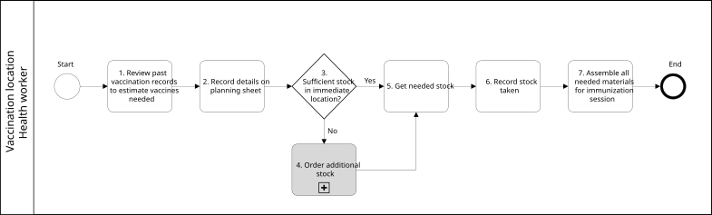
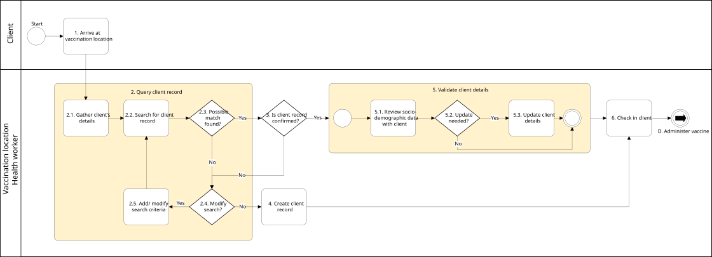
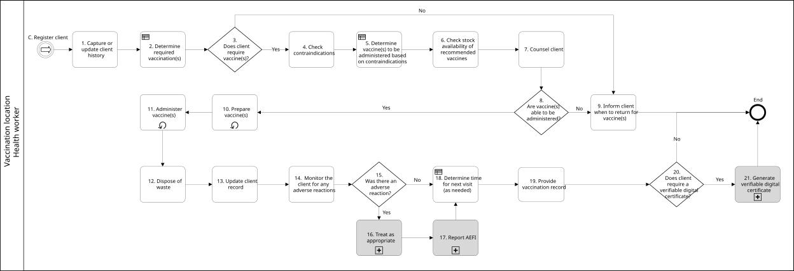
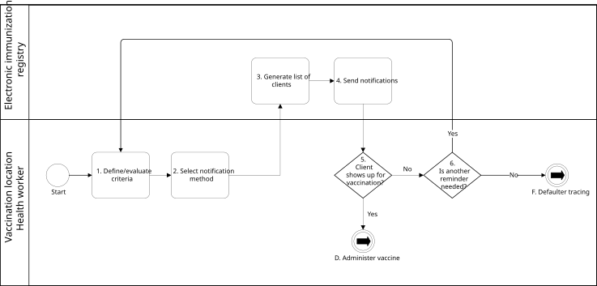
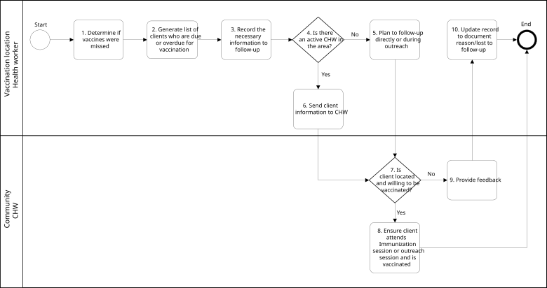
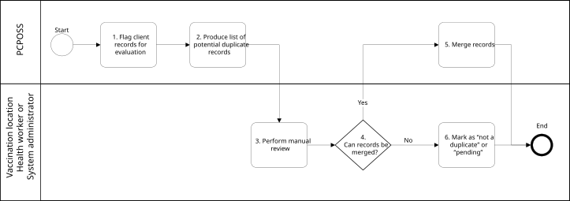
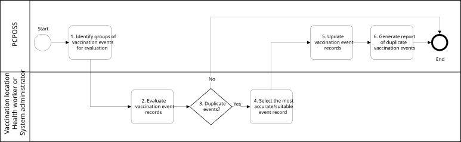
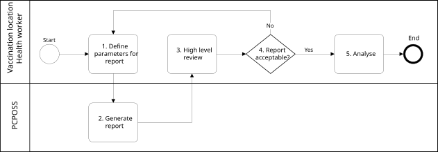

This page describes the business processes included in the WHO Digital Adaptation Kit (DAK) for Immunizations. For full details, see the published DAK content.
A business process, or process, is a set of related activities or tasks performed together to achieve the objectives of the health programme area, such as registration, counselling, referrals. Workflows are a visual representation of the progression of activities (tasks, events, interactions) that are performed within the business process. The workflow provides a “story” for the business process being diagrammed and is used to enhance communication and collaboration among users, stakeholders and engineers.
The DAK for Immunizations focuses on key business processes that are part of routine immunization programmes and mass immunization campaigns.
Overview of Key Business Processes
The following table describes the workflows of the included processes.
| # | Process Name | Process ID | Personas | Objectives |
|---|---|---|---|---|
| A | Vaccination location registration | IMMZ.A | Electronic immunization registry (EIR) staff | All vaccination locations (including private sector facilities, government centres and/or other entities involved in public health efforts) able to administer vaccines must be registered and uniquely identified to enable appropriate tracking of vaccine coverage and stock. In the case of a health-care facility with multiple vaccination locations, only the facility will be registered. |
| B | Plan service delivery | IMMZ.B | Health worker | In preparation for a vaccination session, ensure sufficient supply and organize workload |
| C | Client registration | IMMZ.C | Client, health worker | Create and/or update the clients’ vaccine record by including personal data in the EIR to support future vaccine administration |
| D | Administer vaccine | IMMZ.D | Health worker | To determine which vaccines a client needs, administer those and record the relevant necessary data both in the EIR as well as in the appropriate paper records |
| E | Client reminder | IMMZ.E | Health worker | To remind clients it is time to return for a vaccine |
| F | Defaulter tracing | IMMZ.F | Health worker, community health worker | To identify those who are overdue for a vaccine and reach out to them to schedule their vaccination |
| G | Resolve duplicate client records | IMMZ.G | Health worker, EIR staff | To identify duplicate client records and consolidate them into one most accurate/suitable record |
| H | Resolve duplicate vaccination events | IMMZ.H | Health worker, EIR staff | To identify duplicate vaccination events within a client record and update into one event |
| I | Report generation | IMMZ.I | Health worker | To provide the ability to access and analyse data and to improve immunization programme decision-making |
Workflows
The workflows that follow depict processes that have been generalized across different contexts and may not reflect the variability and nuances across different settings. The simplicity of the workflow may not adequately illustrate the nonlinear steps that may occur.
Overview of key Immunization process flows
The business processes included in the DAK are shown in the following figure. Processes included in the DAK start with a letter (e.g. “A.”) and are shown using the “Activity with sub-process” shape, which includes a plus sign.

A. Vaccination location registration
Objective: All vaccination locations (including private sector facilities, government centres and/or other entities involved in public health efforts) able to administer vaccines must be registered and uniquely identified to enable appropriate tracking of vaccine coverage and stock. In the case of a health-care facility with multiple vaccination locations, only the facility will be registered.

B. Plan service delivery
Objective: In preparation for a vaccination session, ensure sufficient supply and organize workload

C. Client registration
Objective: Create and/or update the clients’ vaccine record by including personal data in the EIR to support future vaccine administration

D. Administer vaccine
Objective: To determine which vaccines a client needs, administer those and record the relevant necessary data both in the EIR as well as in the appropriate paper records

E. Client reminder
Objective: To remind clients it is time to return for a vaccine

F. Defaulter tracing
Objective: To identify those who are overdue for a vaccine and reach out to them to schedule their vaccination

G. Resolve duplicate client records
Objective: To identify duplicate client records and consolidate them into one most accurate/suitable record

H . Resolve duplicate vaccination events
Objective: To identify duplicate vaccination events within a client record and update into one event

I. Report generation
Objective: To provide the ability to access and analyse data and to improve immunization programme decision-making
